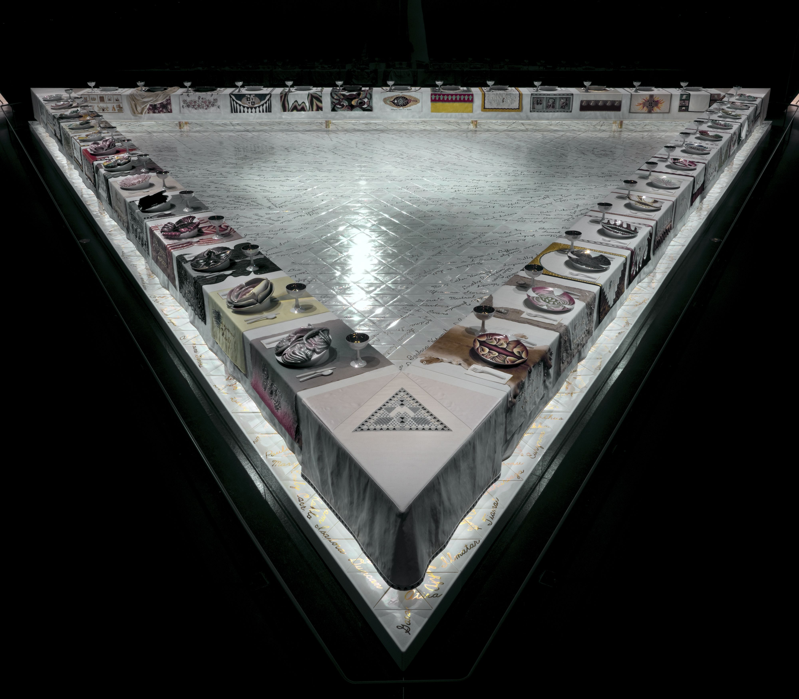
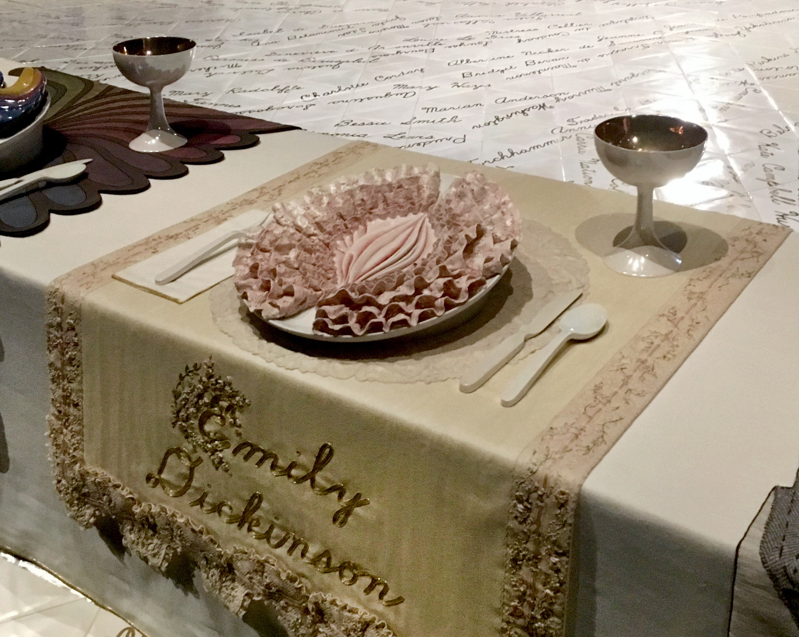
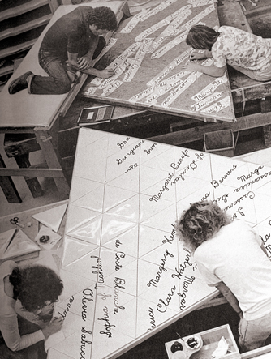
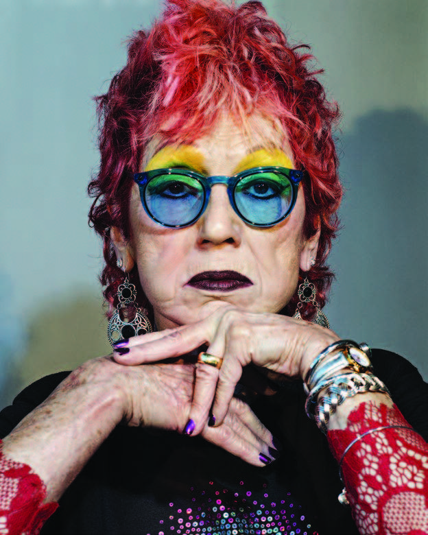

This is one of my favorite art installations,The Dinner Party by Judy Chicago. It is on show permanently at The Brooklyn Museum.
The principal component of The Dinner Party is a massive ceremonial banquet arranged in the shape of a triangle—a symbol of equality. It is 48 feet on each side and has a total of 39 place settings. The “guests of honor” commemorated on the table are designated by intricately embroidered runners, each executed in a historically specific manner.
Upon these are placed, for each setting, a gold ceramic chalice and utensils, a napkin with an embroidered edge, and a fourteen-inch china-painted plate with a central motif based on feminine forms. Each place setting is rendered in a style appropriate to the individual being honored.

Wing One of the table begins in prehistory with the Primordial Goddess and continues chronologically with the development of Judaism; it then moves to early Greek societies to the Roman Empire, marking the decline in women’s power, signified by Hypatia’s place setting. Wing Two represents early Christianity through the Reformation, depicting women who signify early expressions of the fight for equal rights, from Marcella to Anna van Schurman. Wing Three begins with Anne Hutchinson and addresses the American Revolution, Suffragism, and the movement toward women’s increased individual creative expression, symbolized at last by Georgia O’Keeffe.

The Dinner Party rests upon the Heritage Floor, which is an equilateral triangle forty-eight feet on each side. This monumental floor is comprised of 2,300 hand-cast porcelain tiles and provides both a structural and metaphorical support for The Dinner Party table. Inscribed in gold luster are the names of 999 mythical and historical women of achievement, who were selected to contextualize the 39 women represented in the place settings and to convey “how many women had struggleds into prominence or been able to make their ideas known—sometimes in the face of overwhelming obstacles—only (like the women on the table) to have their hard-earned achievements marginalized or erased” (Chicago).
The Heritage Floor serves as a visual representation of the vast contributions women have made to every aspect of history. Names of goddesses, mythological figures, religious figures, government leaders, entrepreneurs, writers, artists, musicians, actors, dancers, filmmakers, architects, scholars, historians, educators, military figures, athletes, physicians, scientists, explorers, philanthropists, activists, and suffragettes, primarily from western civilization, from prehistory to the 20th century, can be found on The Dinner Party‘s Heritage Floor.

Born Judy Cohen in Chicago, Illinois, in 1939, Chicago attended the Art Institute of Chicago and the University of California, Los Angeles. She first started with more minimalist work but turned to feminist content in the late 1960s. At this time she changed her last name to Chicago, the location of her birth.
Believing in the need for a feminist pedagogy for female art students, Chicago launched many feminist art programs across the nation.
Chicago is perhaps best known for her iconic The Dinner Party. The monumental, collaborative project incorporates traditional women’s crafts such as embroidery, needlepoint, and ceramics.
She is a prolific lecturer and writer, and she has taught at many top universities, and has recieved multiple awards.